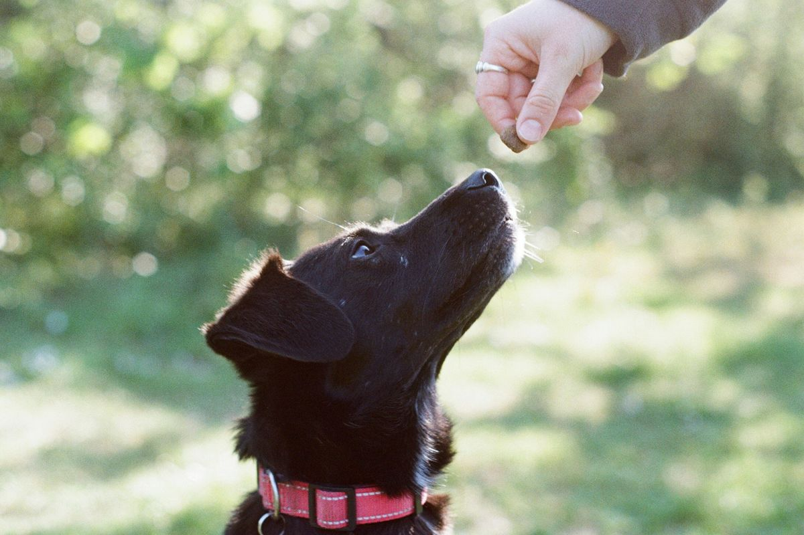
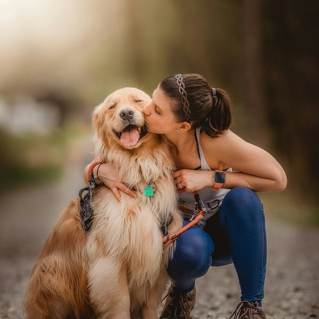
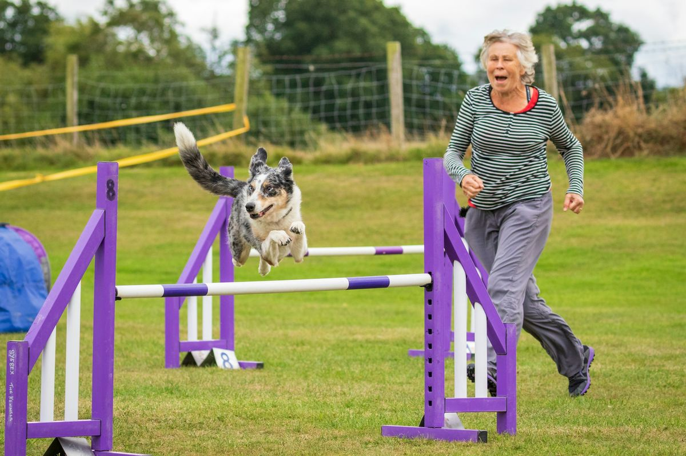
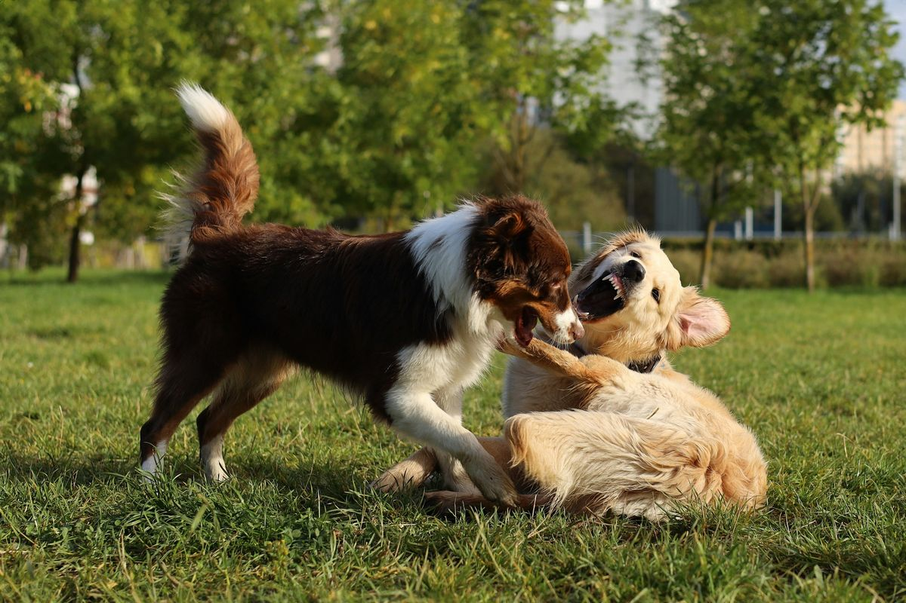
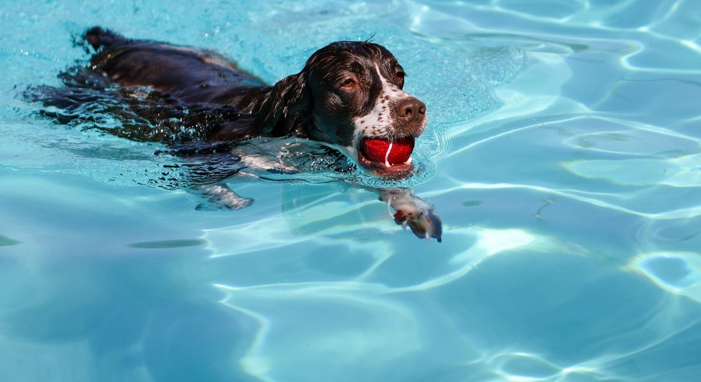
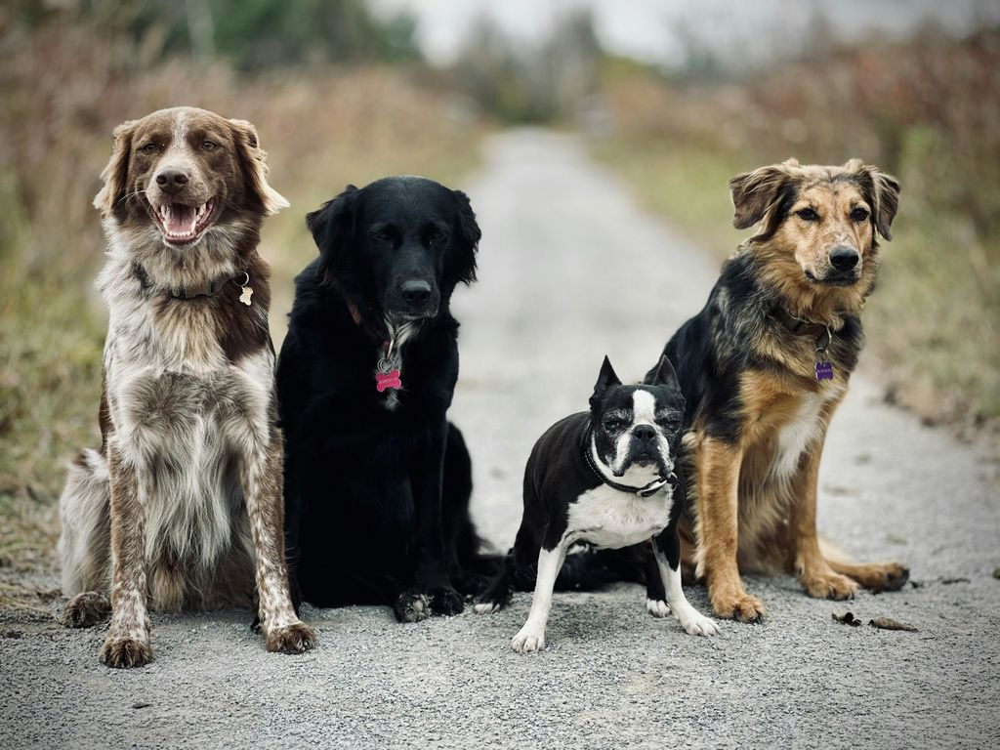
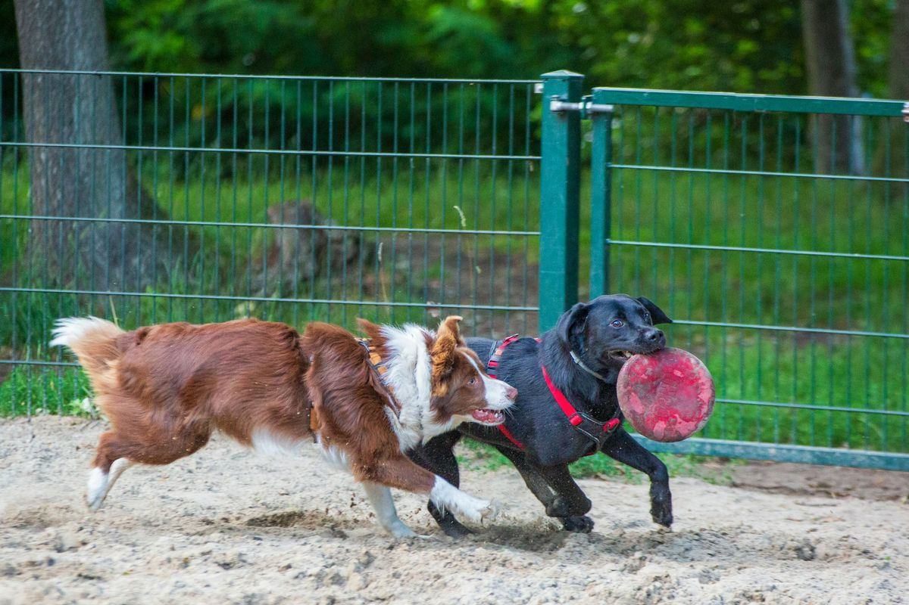
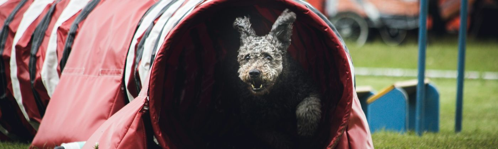

Puppy class
Per cuccioli fino ai sei mesi. Incontri brevi con altri cuccioli, rumori nuovi, persone diverse: le basi per un cane adulto tranquillo.
Centro cinofilo · Roverasca (Piemonte)
Due campi recintati in mezzo ai prati, educatori che spiegano prima di correggere e lezioni in cui il gioco conta quanto l'esercizio.




Chi siamo
Campo Aperto è un centro cinofilo in campagna, fuori dal paese. Lavoriamo con gruppi di poche persone, così ogni cane ha il suo spazio e ogni proprietario riceve risposte precise.
Facciamo corsi di educazione, sport cinofili e incontri a tema, alcuni anche online. Il metodo è sempre lo stesso: premiare quello che va bene e rendere chiaro al cane cosa gli stiamo chiedendo.
Ogni percorso parte da un incontro conoscitivo: età, carattere, abitudini.
Seguiamo corsi e seminari ogni anno, sugli sport cinofili e sul comportamento.
Le lezioni sono aperte a tutta la famiglia, bambini compresi dai 6 anni in su.
I corsi
Undici percorsi, dal cucciolo appena arrivato al cane che vuole fare sport. Filtra per tipo e scrivici per date e quote.
Per cuccioli fino ai sei mesi. Incontri brevi con altri cuccioli, rumori nuovi, persone diverse: le basi per un cane adulto tranquillo.
Le cose che servono ogni giorno: camminare al guinzaglio senza tirare, tornare quando lo chiami, aspettare, lasciare un oggetto.
Gli stessi esercizi, ma più lunghi e in mezzo alle distrazioni: altri cani, biciclette, un parco pieno di gente.
Paure, reattività, difficoltà a restare da solo. Lavoriamo con un medico veterinario esperto in comportamento.
Esercizi adattati per cani che vedono o sentono poco, o che si muovono con fatica. Per continuare a fare cose insieme.
Salti, tunnel e slalom da fare nell'ordine giusto. Si comincia piano, con ostacoli bassi, e si cresce con il cane.
Un percorso a cartelli, ognuno con il suo esercizio da fare insieme. Va bene per ogni cane e ogni conduttore.
Piccoli numeri insegnati con il clicker: la zampa, il giro, l'inchino, chiudere un cassetto. Allena la testa e la pazienza.
Nuoto, riporto dall'acqua e giochi in vasca, per cani che amano bagnarsi e per quelli che devono ancora scoprirlo.
Lezioni con quattro o cinque coppie cane e proprietario, per allenare gli esercizi quando intorno ci sono altri cani.
Incontri tra cani scelti per carattere e taglia, con l'educatrice in campo. Si impara a leggere i segnali che si scambiano.
Oltre ai corsi
Quando non c'è lezione, il centro si può prenotare per allenarsi da soli, giocare o far sfogare il cane in sicurezza.

Da giugno a settembre la vasca si prenota a turni da 45 minuti, solo per te e il tuo cane. Asciugamani e giochi li trovi a bordo vasca.

Uscite e passeggiate quando sei al lavoro o via per qualche giorno. Il primo incontro lo facciamo a casa tua.

Un campo recintato tutto per voi, senza altri cani. Acqua, ombra, una panchina e una cassa di giochi.
Per allenarsi quando piove o fa troppo caldo. Una parete a specchio aiuta a vedere come ti muovi mentre conduci.
Mezza giornata o giornata intera al centro, con giochi, riposo e un po' di educazione. Riapre con la bella stagione.
Lo staff
Educatrice cinofila e istruttrice di agility
“Il cane impara in fretta. Di solito sono le persone ad avere bisogno di qualche lezione in più.”
Irene ha cominciato con i cani da recuperare in un rifugio, poi ha studiato per diventare educatrice. Al centro segue la puppy class e i percorsi di base, e la domenica allena il gruppo di agility. Il suo cane, un golden molto tranquillo, fa da assistente alle lezioni con i cuccioli.
Persona di fantasia, foto da Unsplash.

Gli eventi
Più volte l'anno organizziamo giornate di prova, piccole gare amichevoli e incontri serali online su temi come il cucciolo in casa o il cane anziano.
Domande frequenti
Non trovi la risposta? Scrivici dal modulo in fondo alla pagina.
Certo. Tutti i corsi sono aperti a cani di razza e meticci, di ogni taglia ed età.
La puppy class accetta cuccioli fino ai sei mesi. Prima si comincia, più è facile: i primi mesi sono quelli in cui il cucciolo impara di più.
Sì. Alle lezioni può partecipare tutta la famiglia, bambini compresi dai 6 anni in su.
Siamo aperti dal martedì alla domenica, sempre su appuntamento. Il lunedì il centro resta chiuso.
Dipende dal percorso e dal numero di lezioni. Scrivici dal modulo e ti mandiamo calendario e quote.
Dove siamo
Strada della Roggia 12, Roverasca (Piemonte). A cinque minuti dal centro del paese.
Contatti
Compila il modulo: il messaggio si compone da solo. In questa demo non parte niente, ti mostriamo solo il testo che verrebbe inviato.